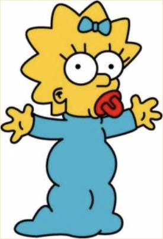
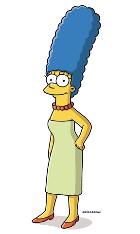

«Сі́мпсони» — американський анімаційний сатиричний серіал, створений Меттом Ґрейнінґом для
компанії «Fox».
Мультсеріал — сатирична пародія на стиль життя середнього класу США, втілена в сім'ї
Сімпсонів,
яка
складається з Гомера, Мардж, Барта, Ліси та Меґґі. Більшість подій
відбуваються у
вигаданому містечку Спрінґфілді.
Шоу висміює численні аспекти життя людей, американську культуру, суспільство, навіть американське телебачення.

Гомер Джей Сімпсон — один із
головних
героїв мультсеріалу «Сімпсони». Гомер — милий та кумедний, проте іноді грубий
і неввічливий батько родини. Він має очевидні вади: товстий, лисий і не дуже розумний. Нерідко він
поводиться як
блазень, абсурдно, егоїстично і нетактовно, але все ж лишається симпатичним.
Гомер має трьох дітей: Барта, Лісу і Меґґі. Гомер неохочий до роботи і багато п'є. Гомер працює
інспектором
безпеки
на Спрінґфілдській атомній електростанції, хоча вся його «робота» часто зводиться до дрімання і поїдання
пончиків.
Велику частину вільного часу він проводить в таверні Мо. Гомер полюбляє висококалорійні закуски:
шоколад,
чіпси та улюблене пиво «Кнур».
Ледар і ненажера, Гомер ― тупий. Водночас у ньому показані гуманні почуття любові до своєї родини.
Цитати Гомера:
- У божевільному світі немає ненормальних.
- Дурень і гроші швидко розлучаються. Я б заплатив багато грошей тому, хто б пояснив мені цю
закономірність.
- Якщо нелегко - не роби. Це мій принцип.
- Якщо він такий розумний, чого він мертвий?

Бартолом'ю ДжоДжо «Барт» Сімпсон
— один із головних героїв мультиплікаційного серіалу Сімпсони. Барт — найстарша
дитина Гомера і Мардж Сімпсон. У нього також є дві молодші сестри — Ліса і Меґґі. Барт є втіленням
образу бешкетника та посереднього учня у школі. Разом зі своїм батьком Барт є одним із найвідоміших
персонажів у цьому серіалі.
Вік Барта — 10 років, а в одній із серій на запитання Гомера він відповідає, що його день народження — 23
лютого.
Найвизначніші риси характеру Барта:
- непослух
- бешкетництво
- бунтарство
- неповага до авторитетів
- дотепність
- саркастичність

Лі́са Марі Сімпсон — персонажка
анімаційного
телесеріалу «Сімпсони», озвучена Ярдлі Сміт. Автор серіалу Мет Ґрейнінґ
назвав героїню іменем сестри.
Ліса — надзвичайно розумна восьмирічна дівчинка, одина з найрозумніших у серіалі (за даними різних серій
її
IQ
становить 156 чи 159). Феміністка. Грає на саксофоні. Полюбляє дивитися мультфільм «Чух і Сверблячка»
разом
з
сім'єю.
Про Лізу:
- шось
- шось1
- шось2
- шось3
- шось4

Маргарет «Меґґі» Сімпсон — одна з головних героїв мультсеріалу Сімпсони, найменша
дочка Гомера Сімпсона та Мардж Сімпсон. Протягом усіх років серіалу Меґґі не росте і завжди залишається
немовлям у повзунках та підгузнику. Попри свій вік Меґґі потрапляє в різні пригоди разом зі своїм братом
Бартом та сестрою Лісою. В одному з серіалів про майбутнє Ліси, Меґґі з'являється дорослою, але навіть там у
неї немає слів. Ідею цього персонажу Мет Ґрейнінґ запозичив від своєї молодшої сестри Меґґі Ґрейнінґ.
Можливе майбутнє:
- У серії «Future-Drama» з'являється на відеолистівці, де загоряє на пляжах Аляски, які з'явилися в
результаті глобального потепління, і бачить змученого білого ведмедя.
- У серії «Lisa's Wedding» показана такою ж бунтаркою, як і її брат. Тінейджер-мотоциклістка, носить свій
смочок на шиї, годинами базікає телефоном. Славиться своїм приголомшливим співочим голосом, але глядачам
так і не дають його почути.
- У серії «Bart to the Future» саму Меґґі не показують, але згадується, що вона стала астронавткою і у неї
є дочка, Меґґі-молодша, яка виглядає точно так само, як однорічна Меґґі-старша.
- У серії «Holidays of Future Passed» показано, що вона вокалістка в популярній рок-групі. У серії нею не
було сказано жодного слова. Була вагітна і народила дівчинку. Ця серія є єдиною показаною в лаштунках
справжнього майбутнього Сімпсонів тож найкращий варіант розвитку подій.

Марджорі
(Мардж) Сімпсон — один з головних персонажів анімаційного серіалу Сімпсони, дружина Гомера Сімпсона,
мати Ліси та Барта.
Домогосподарка, майже весь свій час проводить удома доглядаючи наймолодшу дитину Меґґі, а також Барта, Лісу
і чоловіка. Найвідоміша особливість героїні — блакитне волосся зібране у високу зачіску — «вулик». Мардж
названо на честь матері творця серіалу Мета Ґрейнінґа Марґарет (Мардж) Ґрейнінґ.
Про Мардж:
- шось
- шось2
- шось3
- шось4
- шось5